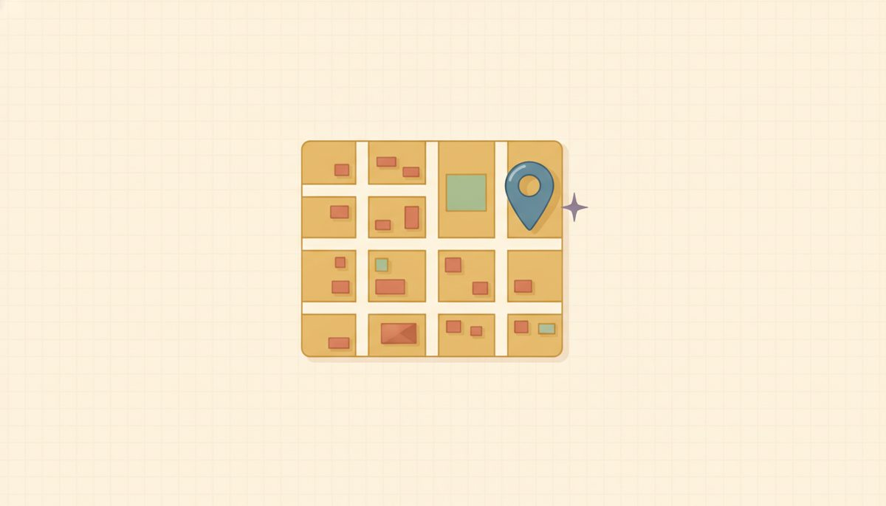

The coordinate plane

Every graph in the rest of algebra lives on one grid, so spend a few minutes getting comfortable on it. The payoff is concrete: a function's table of inputs and outputs turns into points you can see, and a line is just infinitely many of those points in a row.
Start with something you read every day: a street map. Picture a city laid out in a grid, with one road running east to west and one running north to south, crossing at the town center. To tell someone where a place is, you give two numbers: how many blocks east or west, then how many blocks north or south. You always say the east-or-west number first. Swap the two and you've sent them to a different corner.
Now strip the map down to its bones. Draw a horizontal number line and a vertical number line crossing at right angles. The horizontal one is the x-axis, and the vertical one is the y-axis. The spot where they cross, the town center, is the origin, (0, 0).
Every point gets an address written (x, y). The first number is how far across (right is positive, left is negative). The second is how far up or down (up is positive, down is negative). That across-then-up order is the whole game, and it's why (3, 2) and (2, 3) are two different points, not the same one written two ways 5.1.f1.
The two axes cut the flat grid into four regions, called quadrants. They're numbered with Roman numerals I, II, III, IV, starting in the top-right and going counter-clockwise. You don't have to memorize a chart for them, because the signs tell you everything. In the top-right, both coordinates are positive: (+, +). Move counter-clockwise and one sign flips at a time:
$$\text{I: }(+,+)\qquad \text{II: }(-,+)\qquad \text{III: }(-,-)\qquad \text{IV: }(+,-)$$
A useful habit: before you plot a point, read its two signs and predict the quadrant from them alone. The signs are the address; the picture just confirms it.
One case sits outside this scheme. If either coordinate is 0, the point isn't in any quadrant. It's sitting right on an axis. A point like (0, −3) hasn't gone left or right at all, so it rests on the y-axis, on the border between two quadrants rather than inside one. That's worth flagging now, because it's easy to feel you must name a quadrant for every point and force one where there isn't any.
New words
- 5.1.d1 Coordinate plane: a flat grid made by two number lines crossing at right angles.
- 5.1.d2 x-axis / y-axis: the horizontal and vertical number lines. They cross at the origin, (0,0).
- 5.1.d3 Ordered pair (x, y): an address for a point: x first (how far across, right is +), then y (how far up/down, up is +). Order matters: (3,2)≠(2,3).
- 5.1.d4 Quadrant: one of the four regions the axes cut the plane into, numbered I, II, III, IV counter-clockwise starting top-right.
Plot four points and name where each one lands, reading the signs as you go: (3,2), (-1,4), (0,-3), (-2,-2).
-
(3,2): x is +, y is + → right 3, up 2 → Quadrant I. 5.1.w2
-
(-1,4): x is −, y is + → left 1, up 4 → Quadrant II. 5.1.w3
-
(0,-3): x is 0 → no left or right; down 3 → it sits on the y-axis (no quadrant). 5.1.w4
-
(-2,-2): both − → left 2, down 2 → Quadrant III.
Here are those four points on the plane, with the quadrants labeled so you can see the sign pattern at a glance.
| Point | x | y | Location |
|---|---|---|---|
| (3,2) | +3 | +2 | Quadrant I |
| (-1,4) | −1 | +4 | Quadrant II |
| (0,-3) | 0 | −3 | y-axis |
| (-2,-2) | −2 | −2 | Quadrant III |
One slip is easy to make: reversing the pair, reading (−1, 4) as "left 4, up 1" instead of "left 1, up 4." The fix is to read the address the same way every time: the first number is always the across one. If you catch a point landing in the wrong quadrant for its signs, that reversal is the first thing to check.
Check yourself
- 5.1.c1 Without plotting, which quadrant is (-7, -2) in, and how do the signs tell you? (Both coordinates are negative, which is the (−, −) pattern, so it's in Quadrant III.)
- 5.1.c2 You plotted a point in Quadrant IV. What can you say about the signs of its coordinates? (Quadrant IV is bottom-right: x is positive, y is negative, the (+, −) pattern.)
- 5.1.c3 Where does (4, 0) live, and why isn't it in a quadrant? (The y-coordinate is 0, so you go right 4 but neither up nor down; the point lands on the x-axis, on the border, not inside a quadrant.)
You can now plot any point from its address, read which quadrant it's in straight from its two signs, and recognize when a point sits on an axis instead.
The problems below are mixed on purpose. That feels a little harder than doing ten of the same kind, and the extra effort is exactly what makes the skill stay with you. Every answer is at the end of the lesson if you want to check yourself.
Practice
Name the quadrant (or axis):
- 5.1.1 (5, 3)
- 5.1.2 (-4, -1)
- 5.1.3 (-2, 6)
- 5.1.4 (3, -5)
- 5.1.5 (8, -2)
- 5.1.6 (-6, 1)
- 5.1.7 (4, 0)
- 5.1.8 (0, 7)
- 5.1.9 (0, 0)
Plot & locate:
- 5.1.10 Plot (-3, 1) and name its quadrant.
AnswersTry each one yourself first, then open to check.
- Quadrant I · 2. Quadrant III · 3. Quadrant II · 4. Quadrant IV · 5. Quadrant IV · 6. Quadrant II · 7. on the x-axis (no quadrant) · 8. on the y-axis (no quadrant) · 9. the origin (no quadrant) · 10. left 3, up 1 → Quadrant II.